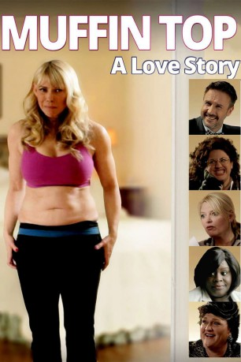

#10699 Hüftgold - Eine zuckersüße Liebesgeschichte
Alternativ: Muffin Top: A Love Story (Englischer Titel)
 
 IMDB-Wertung: 4.9 / 10
IMDB-Wertung: 4.9 / 10  Metascore: 0
Metascore: 0 
Professorin Suzanne kämpft gegen das heutige Frauenbild in der Werbung - super-schlank und makellos. Bis sie ausgerechnet an ihrem Geburtstag von ihrem Mann verlassen wird - wegen einer jüngeren und schlankeren Frau. Überzeugt, dass ihr "nicht ganz so ideales" weibliches Erscheinungsbild die Ursache für die Trennung ist, macht sie sich verzweifelt auf, genau diesem Frauenbild des überperfekten Supermodels nachzueifern. Was allerdings gehörig in die Hose geht, bis sie realisiert, dass das Single-Leben in Los Angeles durchaus seine Vorzüge hat und niemand ganz perfekt ist.
Jahr: 2014
Dauer: 96 Minuten
FSK: 12
Land: USA Studio: Sunfilm EntertainmentTonspuren: DTS - ,
Untertitel: Deutsch,
Auflösung: 1080p (1920x1080) Größe: 4597 MB
Genre: Komödie, Liebe
Regisseur: Cathryn Michon
Drehbuch: W. Bruce Cameron, Cathryn Michon
Soundtrack: Michelle Featherstone
Darsteller:
- Cathryn Michon als Suzanne Nicholson
 Marissa Jaret Winokur als Elise
Marissa Jaret Winokur als Elise Diedrich Bader als Michael Nicholson
Diedrich Bader als Michael Nicholson- Jill Holden als Dr. Nadja Borman
- Haylie Duff als Jessica
 Jane Morris als Dr. Khalsa
Jane Morris als Dr. Khalsa Wayne Federman als Hayes Greenberg
Wayne Federman als Hayes Greenberg- Michael Hawley als Jarod
- Melissa Peterman als Kim
 Gary Anthony Williams als Gregory David Gregory
Gary Anthony Williams als Gregory David Gregory David Arquette als Cameron Scott
David Arquette als Cameron Scott- Cristine Rose als Deborah
 Dot-Marie Jones als Christina
Dot-Marie Jones als Christina- Marcia Wallace als Marcia Wallace
- Markie Post als Linda
- Leah Rachel als Lisa
- Kate Fuglei als Amanda
 Rick Overton als Steve
Rick Overton als Steve- Wendy Hammers als Dr. Delaney
- Kayla Ibarra als Lindsey
- Barrett Shuler als Ian
- Gavin Scott als Trevor
 Retta als Leah
Retta als Leah- Maria Bamford als Angelique
 Jordan Black als Wilton
Jordan Black als Wilton Phil LaMarr als Peter Durton
Phil LaMarr als Peter Durton Meredith Scott Lynn als Katey
Meredith Scott Lynn als Katey- David Avallone als Well Dressed Man
- Peter Cameron als Stage Manager
- W. Bruce Cameron als Plastic Surgery Guy
- Patrick Flanagan als Delivery Man
- Isela Sanchez als Diana / Party Goer
- Tucker als BooBoo
- Michael Halpin als Barnaby
- Victoria Bohush als Andrea
- Dominique Dorian als Sophie
- Laura House als Barista
- Gary Lucy als Alan
- Marci Brickhouse als Ruth
- Stephanie Miller als Oscars Host
- Tina Ryker als Karen
Datei: X:\2014(G-M)\Hüftgold - Eine zuckersüße Liebesgeschichte (2014, FSK12, 1920x1080).mkv seit 22.02.2019
Festplatte: HD 2013(I-Z)-2014(A-Z)
 Es gibt insgesamt 136 Filme in der Gruppe '2014(G-M)'
Es gibt insgesamt 136 Filme in der Gruppe '2014(G-M)'